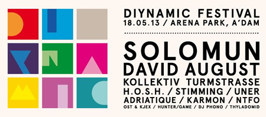

Diynamic Festival (18/05/13)
{kind=link}

Last year really was the year for Diynamic boss Solomun, which saw the deep house vanguard reaching new heights of success, threatening to tip the scales into genuine crossover, a la Luciano’s heights of Ibiza super-stardom. Solomun in particular ruled the White Isle in 2012, though this year he’s extended his reach into over to Amsterdam, with the rather tasty looking Diynamic Festival, the first of its kind for the label (with more apparently on the way).
For lovers of the Diynamic brand of deep, warm, sumptuous house and techno - it was a sure-fire win. Heavyweght Solomun playing a 3-hour closing set, plus a cast of Diynamic regulars like Stimming, Adriatique and Kollektiv Turmstrasse, playing across two stages in an intimate outdoor setting in the springtime. As it turns out, you need just a little more than great music to make an amazing festival; though the ingredients were all there for a solid day in any case.
The O2 Arenapark was the venue chosen for the party; an open arena space in the middle of the city with a few scattered grassy patches laid over the concrete. The setting was a little short of spectacular, and of the other open-air parks we've come to associate with Amsterdam’s renowned day events. From a practical perspective though, the site would have demanded little in terms of infrastructure for a festival of a more intimate nature, and consistent with the vibe of the party itself, it definitely got the job done.
The same went for the setup of the festival’s setup. The mainstage was an open area capable of housing a few thousand, with a canopy stretched over the top, to protect from punters from the Northern European spring that has never actually arrived. The stage setup on the stage was a rather impressive collection of stacked, backlit cubes, recreating the familiar Diynamic artwork that adorned festival advertising.
H.O.S.H. was laying down a tantalizingly deep selection of tech house upon arrival in the late afternoon, with all the warmth you’d expected from the label’s output, though with a tougher drive that was reflective of the fact he was playing to a crowd of several thousand. From this vantage point, he was already delivering on the festival’s promise of beautiful, warm, melodic house music all day long.
The second stage was a tent perched to the left of the main stage, up a small grass hill, sheltered to offer a shadier alternative to the summery sounds of the mainstage, as well as some respite for the punters in case the threat of a torrential downpour turned into reality. A live set from Kollektiv Turmstrasse was one of the stage’s tastiest treats in the late afternoon. Nico and Christian wound the energy levels down somewhat, perhaps reflective of the darker surroundings, brave enough to really dive into some super-chilled sounds in the set’s second half, with some particularly long breakdowns and deep, gorgeous euphoric melodies; they brought some of the most gorgeous sounds heard all day.
The tent’s other main star of the day was Diynamic golden boy Stimming, who’s been in the spotlight since the early days of the label, with a new album on the way and his packed touring schedule over the summer reflective of the fact he’s still very much in demand. Tonight he was aiming for the deep grooves, though not quite as successful as Kollektiv Turmstrasse in creating the ideal atmosphere; a little more of the bouncy energy he’s been able to bring to his live sets over the years would have gone down slightly better on the business end of the festival.
Diynamic youngster David August did an admirable job of warming up for Solomun’s closing three-hour set at the mainstage, with an live hour of his colourful, melodic tech; though it was his big boss’s finale that drew a huge crowd under the mainstage canopy. It was a set that showed how much Solomun has gradually evolved his selections over the past few years, into a beast that’s crowdpleasing enough to warrant his own residency at Pacha Ibiza; all the while remaining true to the ethos of what made Diynamic special in the first place. This careful balancing act was out in force during the three hours, for some unashamedly huge sounds, wrapped up in that classic Solomun vibe.
Beginning the journey with some heavy basslines and big builds, properly taking advantage of the big space given to him, it gave him a window to move into some sounds that were definitely on the funkier end of the spectrum from what was heard that day; the old-school funk and disco sensibilities that have always been part of the Solomun persona. He didn’t dally too long here though; before long he was breaking out Chemical Brothers Do It Again, the first of many unexpected anthems that got an airing over the three hours, often to a rapturous crowd response. He’s definitely embraced the mantle of the ‘party’ DJ, packing those unexpected bombs that you’d probably nearly forgotten about. Remixes of Outkast Roses, The Cure Young Again and many more got an airing during his set. He also wasn’t afraid to drop a few straight-up hits, evidenced by the house edit of Get Lucky dropped around halfway point.
Though that’s not to suggest he’s the kind of DJ who goes for the easy kills, though; it’s about how he works it into his set, and it was all heard amongst a wide assortment of big bouncy funk, piano house, some deeper selections, plus a cast of more upfront anthems like Andhim’s mix of Wine & Chocolates. There’s a nice sense of drama to his showmanship; raising his hand out to the crowd, it’s almost like his own version of the Jesus-pose dramatics sported by the top jocks of the trance scene. He’s transformed into a consummate ‘everyman’ of house music; effortlessly playing the spectrum of house, from deep, to funky, to bigroom.
The impressive lights and colours on stage were amped up as the sun set and the party moved towards it conclusion, as did the energy of Solomun’s selections, with some power progressive leading through to his inspired final choice of Sasha’s Involv3r Remix of The Foals Late Night.
Diynamic’s first venture into the festival market was an event that ticked all the boxes; perhaps falling short of the perfection it promised, mostly due to a setting that got the job done without being spectacular. In terms of the party’s headliner though, it showed in every sense why he’s got what’s needed to take it to the next level, and he’s certain to have a busy 2013.
www.diynamicfestival.com | www.facebook.com/diynamicfestival